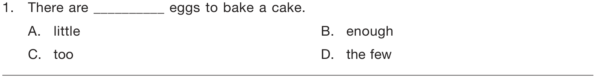
FOR QUESTIONS 1 TO 10, CHOOSE THE CORRECT OPTION TO FILL IN THE BLANK.
There are __________ eggs to bake a cake.
little
enough
too
the few
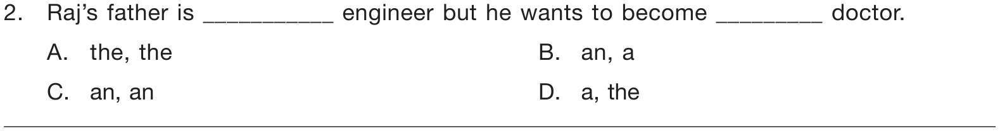
FOR QUESTIONS 1 TO 10, CHOOSE THE CORRECT OPTION TO FILL IN THE BLANK.
Raj’s father is ___________ engineer but he wants to become _________ doctor.
the, the
an, a
an, an
a, the
In the given question, ‘e’ in ‘engineer’ is a vowel and ‘d’ in ‘doctor’ is a consonant. So, ‘an’ and ‘a’ is the answer.
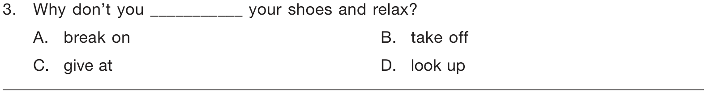
FOR QUESTIONS 1 TO 10, CHOOSE THE CORRECT OPTION TO FILL IN THE BLANK.
Why don’t you ___________ your shoes and relax?
break on
take off
give at
look up
‘Take off’’ is the phrasal verb and in this question it means ‘to remove’, so ‘take off’ is the answer.
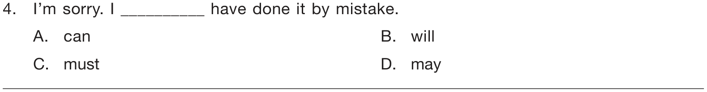
FOR QUESTIONS 1 TO 10, CHOOSE THE CORRECT OPTION TO FILL IN THE BLANK.
I’m sorry. I __________ have done it by mistake.
can
will
must
may
‘Must’ is a modal verb and is used to show necessity in a sentence, so ‘must’ is the answer.
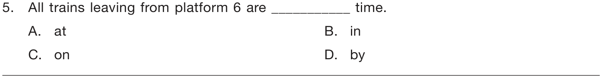
FOR QUESTIONS 1 TO 10, CHOOSE THE CORRECT OPTION TO FILL IN THE BLANK.
All trains leaving from platform 6 are ___________ time.
at
in
on
by
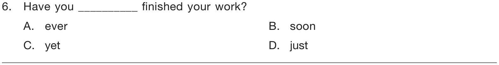
FOR QUESTIONS 1 TO 10, CHOOSE THE CORRECT OPTION TO FILL IN THE BLANK.
Have you __________ finished your work?
ever
soon
yet
just
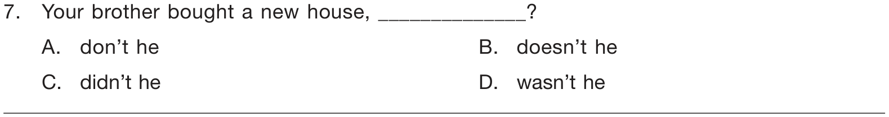
FOR QUESTIONS 1 TO 10, CHOOSE THE CORRECT OPTION TO FILL IN THE BLANK.
Your brother bought a new house, ______________?
don’t he
doesn’t he
didn’t he
wasn’t he
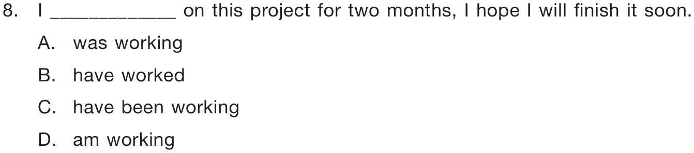
FOR QUESTIONS 1 TO 10, CHOOSE THE CORRECT OPTION TO FILL IN THE BLANK.
I _____________ on this project for two months, I hope I will finish it soon.
was working
have worked
have been working
am working
Since the sentence is in present perfect continuous tense, so ‘have been working’ is the answer.
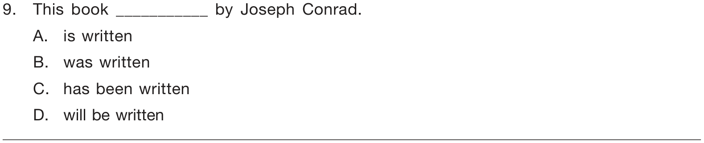
FOR QUESTIONS 1 TO 10, CHOOSE THE CORRECT OPTION TO FILL IN THE BLANK.
This book ___________ by Joseph Conrad.
is written
was written
has been written
will be written
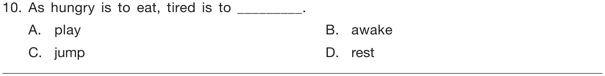
FOR QUESTIONS 1 TO 10, CHOOSE THE CORRECT OPTION TO FILL IN THE BLANK.
As hungry is to eat, tired is to _________.
play
awake
jump
rest
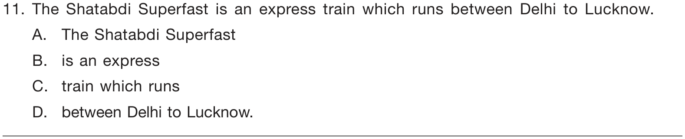
FOR QUESTIONS 11 AND 12, CHOOSE THE PART OF THE SENTENCE THAT HAS AN ERROR.
The Shatabdi Superfast is an express train which runs between Delhi to Lucknow.
The Shatabdi Superfast
is an express
train which runs
between Delhi to Lucknow.
The correct sentence would be, ‘‘The Shatabdi Superfast is an express train which runs from Delhi to Lucknow’’.
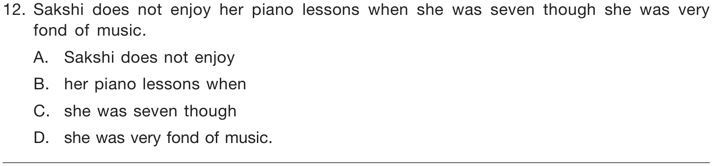
FOR QUESTIONS 11 AND 12, CHOOSE THE PART OF THE SENTENCE THAT HAS AN ERROR.
Sakshi does not enjoy her piano lessons when she was seven though she was very fond of music.
Sakshi does not enjoy
her piano lessons when
she was seven though
she was very fond of music.
The correct sentence would be, ‘‘Sakshi did not enjoy her piano lessons when she was seven though she was very fond of music’’.
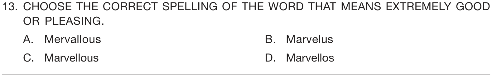
CHOOSE THE CORRECT SPELLING OF THE WORD THAT MEANS EXTREMELY GOOD OR PLEASING.
Mervallous
Marvelus
Marvellous
Marvellos
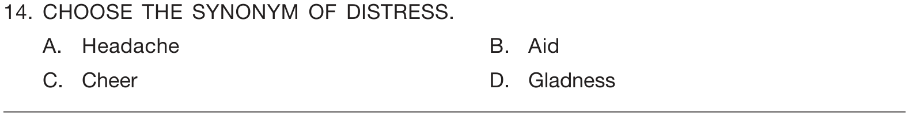
CHOOSE THE SYNONYM OF DISTRESS.
Headache
Aid
Cheer
Gladness
‘Headache’ is the synonym of ‘distress’. Both these words mean ‘‘pain’’.
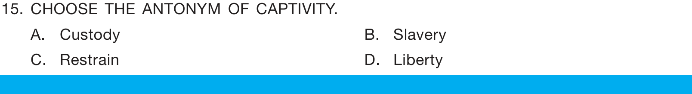
CHOOSE THE ANTONYM OF CAPTIVITY.
Custody
Slavery
Restrain
Liberty
‘Liberty’ is the antonym of ‘Captivity’. The meaning of ‘liberty’ is ‘freedom’ and the meaning of ‘captivity’ is ‘a condition for being imprisoned or trapped’.
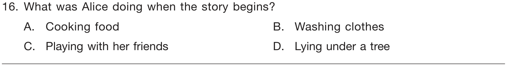
FOR QUESTIONS 16 TO 20, READ THE PASSAGE AND ANSWER THE QUESTIONS THAT FOLLOW.
One day, Alice was lying under a tree listening to her sister reading a story. Suddenly, she saw a white rabbit scamper by. He had pink eyes and was wearing a blue coat. He took out a big watch from his waistcoat pocket as he hurried away, he said, “Oh dear, I will be too late!”
She thought there was something very different about this rabbit. It could talk, it wore a red waistcoat and it carried a watch.
Alice wondered, “A talking rabbit? A rabbit who wears a waistcoat.” Alice was burning with curiosity and she followed the white rabbit.
The rabbit started running and Alice followed the rabbit. The rabbit suddenly popped into a large rabbit hole. Alice jumped into the rabbit hole too! The rabbit went down and down and down and down into the rabbit hole.
What was Alice doing when the story begins?
Cooking food
Washing clothes
Playing with her friends
Lying under a tree
Alice was lying under a tree listening to her sister reading a story.
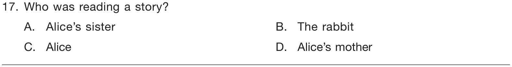
FOR QUESTIONS 16 TO 20, READ THE PASSAGE AND ANSWER THE QUESTIONS THAT FOLLOW.
One day, Alice was lying under a tree listening to her sister reading a story. Suddenly, she saw a white rabbit scamper by. He had pink eyes and was wearing a blue coat. He took out a big watch from his waistcoat pocket as he hurried away, he said, “Oh dear, I will be too late!”
She thought there was something very different about this rabbit. It could talk, it wore a red waistcoat and it carried a watch.
Alice wondered, “A talking rabbit? A rabbit who wears a waistcoat.” Alice was burning with curiosity and she followed the white rabbit.
The rabbit started running and Alice followed the rabbit. The rabbit suddenly popped into a large rabbit hole. Alice jumped into the rabbit hole too! The rabbit went down and down and down and down into the rabbit hole.
Who was reading a story?
Alice’s sister
The rabbit
Alice
Alice’s mother
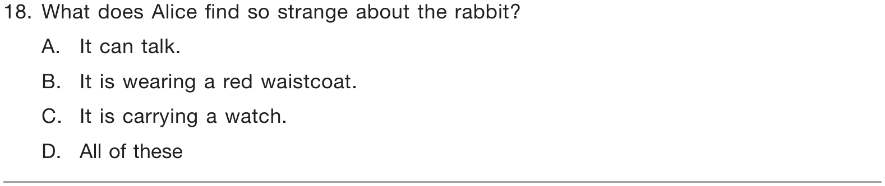
FOR QUESTIONS 16 TO 20, READ THE PASSAGE AND ANSWER THE QUESTIONS THAT FOLLOW.
One day, Alice was lying under a tree listening to her sister reading a story. Suddenly, she saw a white rabbit scamper by. He had pink eyes and was wearing a blue coat. He took out a big watch from his waistcoat pocket as he hurried away, he said, “Oh dear, I will be too late!”
She thought there was something very different about this rabbit. It could talk, it wore a red waistcoat and it carried a watch.
Alice wondered, “A talking rabbit? A rabbit who wears a waistcoat.” Alice was burning with curiosity and she followed the white rabbit.
The rabbit started running and Alice followed the rabbit. The rabbit suddenly popped into a large rabbit hole. Alice jumped into the rabbit hole too! The rabbit went down and down and down and down into the rabbit hole.
What does Alice find so strange about the rabbit?
It can talk.
It is wearing a red waistcoat.
It is carrying a watch.
All of these
Alice thought there was something very strange about the rabbit. It could talk, it wore a red waistcoat and it carried a watch.
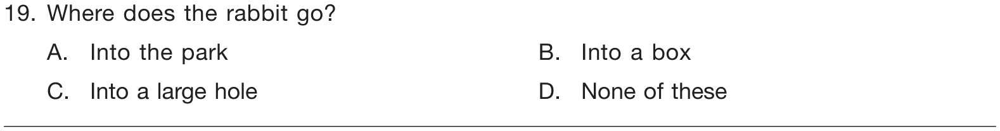
FOR QUESTIONS 16 TO 20, READ THE PASSAGE AND ANSWER THE QUESTIONS THAT FOLLOW.
One day, Alice was lying under a tree listening to her sister reading a story. Suddenly, she saw a white rabbit scamper by. He had pink eyes and was wearing a blue coat. He took out a big watch from his waistcoat pocket as he hurried away, he said, “Oh dear, I will be too late!”
She thought there was something very different about this rabbit. It could talk, it wore a red waistcoat and it carried a watch.
Alice wondered, “A talking rabbit? A rabbit who wears a waistcoat.” Alice was burning with curiosity and she followed the white rabbit.
The rabbit started running and Alice followed the rabbit. The rabbit suddenly popped into a large rabbit hole. Alice jumped into the rabbit hole too! The rabbit went down and down and down and down into the rabbit hole.
Where does the rabbit go?
Into the park
Into a box
Into a large hole
None of these
The rabbit suddenly popped into a large rabbit hole.
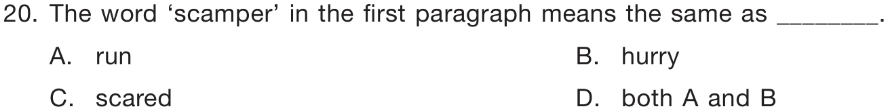
FOR QUESTIONS 16 TO 20, READ THE PASSAGE AND ANSWER THE QUESTIONS THAT FOLLOW.
One day, Alice was lying under a tree listening to her sister reading a story. Suddenly, she saw a white rabbit scamper by. He had pink eyes and was wearing a blue coat. He took out a big watch from his waistcoat pocket as he hurried away, he said, “Oh dear, I will be too late!”
She thought there was something very different about this rabbit. It could talk, it wore a red waistcoat and it carried a watch.
Alice wondered, “A talking rabbit? A rabbit who wears a waistcoat.” Alice was burning with curiosity and she followed the white rabbit.
The rabbit started running and Alice followed the rabbit. The rabbit suddenly popped into a large rabbit hole. Alice jumped into the rabbit hole too! The rabbit went down and down and down and down into the rabbit hole.
The word ‘scamper’ in the first paragraph means the same as ________.
run
hurry
scared
both A and B
The meaning of ‘scamper’ is ‘to run quickly or hurriedly.’
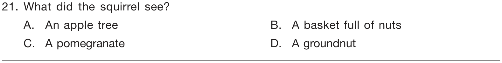
FOR QUESTIONS 21 TO 25, READ THE PASSAGE AND ANSWER THE QUESTIONS THAT FOLLOW.
A greedy squirrel saw a basket full of nuts. She wanted to eat it. So she made a small hole in the basket. She squeezed in through the hole. She ate a lot of nuts. She felt so happy as she ate to the fullest.
Now she wanted to come out. She tried to come out through the small hole. But she could not. Her belly was full. She tried again but it was of no use. She tried harder and harder to come out of the basket but all in vain. The squirrel started crying. A mouse was passing by. It heard the squirrel’s cry and asked, “What is the matter? Why are you crying?”
The squirrel explained, “I made a small hole and came into the basket to eat nuts. Now I am unable to come out. Can you please help me, little mouse?” The mouse felt pity on her and agreed to help her. He made another big hole into the basket and helped the squirrel to come out of it. The squirrel was so pleased with his kindness. She thanked him and they both became good friends. The mouse then advised her that, “Greed always leads to problems, so never allow greed to overpower you.”
What did the squirrel see?
An apple tree
A basket full of nuts
A pomegranate
A groundnut
The greedy squirrel saw a basket full of nuts.
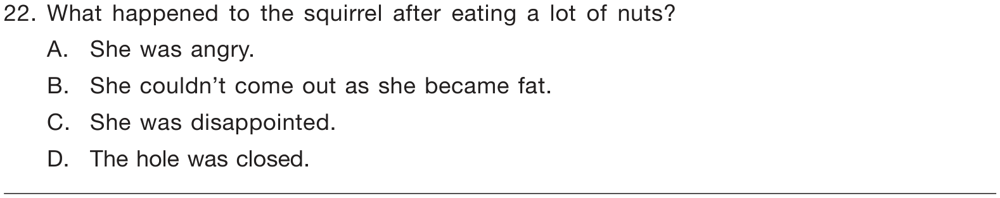
FOR QUESTIONS 21 TO 25, READ THE PASSAGE AND ANSWER THE QUESTIONS THAT FOLLOW.
A greedy squirrel saw a basket full of nuts. She wanted to eat it. So she made a small hole in the basket. She squeezed in through the hole. She ate a lot of nuts. She felt so happy as she ate to the fullest.
Now she wanted to come out. She tried to come out through the small hole. But she could not. Her belly was full. She tried again but it was of no use. She tried harder and harder to come out of the basket but all in vain. The squirrel started crying. A mouse was passing by. It heard the squirrel’s cry and asked, “What is the matter? Why are you crying?”
The squirrel explained, “I made a small hole and came into the basket to eat nuts. Now I am unable to come out. Can you please help me, little mouse?” The mouse felt pity on her and agreed to help her. He made another big hole into the basket and helped the squirrel to come out of it. The squirrel was so pleased with his kindness. She thanked him and they both became good friends. The mouse then advised her that, “Greed always leads to problems, so never allow greed to overpower you.”
What happened to the squirrel after eating a lot of nuts?
She was angry.
She couldn’t come out as she became fat.
She was disappointed.
The hole was closed.
The squirrel wanted to come out through the small hole but she could not as she became fat after eating a lot of nuts.
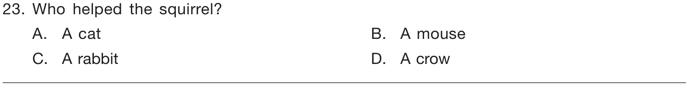
FOR QUESTIONS 21 TO 25, READ THE PASSAGE AND ANSWER THE QUESTIONS THAT FOLLOW.
A greedy squirrel saw a basket full of nuts. She wanted to eat it. So she made a small hole in the basket. She squeezed in through the hole. She ate a lot of nuts. She felt so happy as she ate to the fullest.
Now she wanted to come out. She tried to come out through the small hole. But she could not. Her belly was full. She tried again but it was of no use. She tried harder and harder to come out of the basket but all in vain. The squirrel started crying. A mouse was passing by. It heard the squirrel’s cry and asked, “What is the matter? Why are you crying?”
The squirrel explained, “I made a small hole and came into the basket to eat nuts. Now I am unable to come out. Can you please help me, little mouse?” The mouse felt pity on her and agreed to help her. He made another big hole into the basket and helped the squirrel to come out of it. The squirrel was so pleased with his kindness. She thanked him and they both became good friends. The mouse then advised her that, “Greed always leads to problems, so never allow greed to overpower you.”
Who helped the squirrel?
A cat
A mouse
A rabbit
A crow
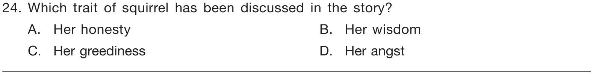
FOR QUESTIONS 21 TO 25, READ THE PASSAGE AND ANSWER THE QUESTIONS THAT FOLLOW.
A greedy squirrel saw a basket full of nuts. She wanted to eat it. So she made a small hole in the basket. She squeezed in through the hole. She ate a lot of nuts. She felt so happy as she ate to the fullest.
Now she wanted to come out. She tried to come out through the small hole. But she could not. Her belly was full. She tried again but it was of no use. She tried harder and harder to come out of the basket but all in vain. The squirrel started crying. A mouse was passing by. It heard the squirrel’s cry and asked, “What is the matter? Why are you crying?”
The squirrel explained, “I made a small hole and came into the basket to eat nuts. Now I am unable to come out. Can you please help me, little mouse?” The mouse felt pity on her and agreed to help her. He made another big hole into the basket and helped the squirrel to come out of it. The squirrel was so pleased with his kindness. She thanked him and they both became good friends. The mouse then advised her that, “Greed always leads to problems, so never allow greed to overpower you.”
Which trait of squirrel has been discussed in the story?
Her honesty
Her wisdom
Her greediness
Her angst
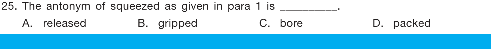
FOR QUESTIONS 21 TO 25, READ THE PASSAGE AND ANSWER THE QUESTIONS THAT FOLLOW.
A greedy squirrel saw a basket full of nuts. She wanted to eat it. So she made a small hole in the basket. She squeezed in through the hole. She ate a lot of nuts. She felt so happy as she ate to the fullest.
Now she wanted to come out. She tried to come out through the small hole. But she could not. Her belly was full. She tried again but it was of no use. She tried harder and harder to come out of the basket but all in vain. The squirrel started crying. A mouse was passing by. It heard the squirrel’s cry and asked, “What is the matter? Why are you crying?”
The squirrel explained, “I made a small hole and came into the basket to eat nuts. Now I am unable to come out. Can you please help me, little mouse?” The mouse felt pity on her and agreed to help her. He made another big hole into the basket and helped the squirrel to come out of it. The squirrel was so pleased with his kindness. She thanked him and they both became good friends. The mouse then advised her that, “Greed always leads to problems, so never allow greed to overpower you.”
The antonym of squeezed as given in para 1 is __________.
released
gripped
bore
packed
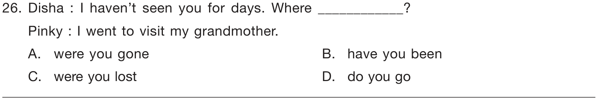
FOR QUESTIONS 26 TO 30, CHOOSE THE CORRECT OPTION TO COMPLETE EACH CONVERSATION.
Disha : I haven’t seen you for days. Where ____________?
Pinky : I went to visit my grandmother.
were you gone
have you been
were you lost
do you go
Since the sentence is in present perfect continuous tense, so, ‘have you been’ is the answer.
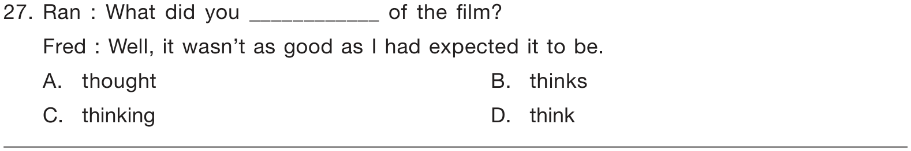
FOR QUESTIONS 26 TO 30, CHOOSE THE CORRECT OPTION TO COMPLETE EACH CONVERSATION.
Ran : What did you ____________ of the film?
Fred : Well, it wasn’t as good as I had expected it to be.
thought
thinks
thinking
think
Since the sentence is in simple past tense, interrogative, so ‘think’ is the answer.
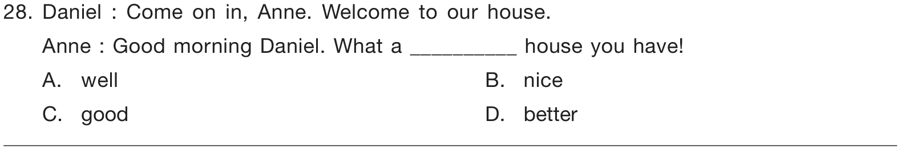
FOR QUESTIONS 26 TO 30, CHOOSE THE CORRECT OPTION TO COMPLETE EACH CONVERSATION.
Daniel : Come on in, Anne. Welcome to our house.
Anne : Good morning Daniel. What a __________ house you have!
well
nice
good
better
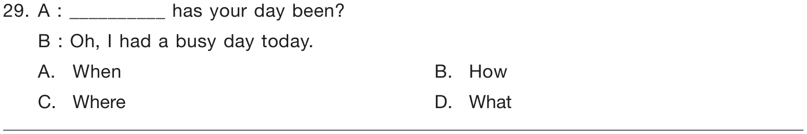
FOR QUESTIONS 26 TO 30, CHOOSE THE CORRECT OPTION TO COMPLETE EACH CONVERSATION.
A : __________ has your day been? B : Oh, I had a busy day today.
When
How
Where
What
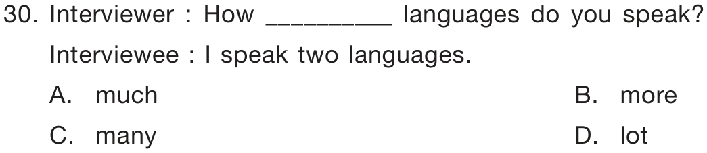
FOR QUESTIONS 26 TO 30, CHOOSE THE CORRECT OPTION TO COMPLETE EACH CONVERSATION.
Interviewer : How __________ languages do you speak?
Interviewee : I speak two languages.
much
more
many
lot
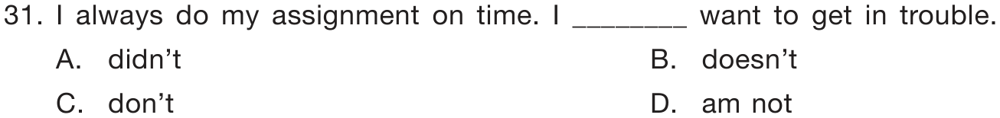
FOR QUESTIONS 31 TO 33, CHOOSE THE CORRECT OPTION TO FILL IN THE BLANK.
I always do my assignment on time. I ________ want to get in trouble.
didn’t
doesn’t
don’t
am not
Since the sentence is in simple present tense, so, ‘don’t’ is the answer.
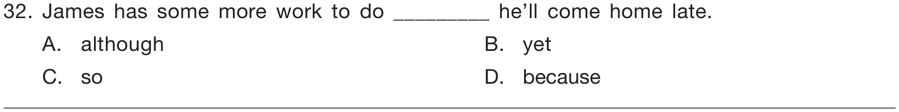
FOR QUESTIONS 31 TO 33, CHOOSE THE CORRECT OPTION TO FILL IN THE BLANK.
James has some more work to do _________ he’ll come home late.
although
yet
so
because
Conjunction ‘so’ is used to ‘‘show reason for doing the thing just mentioned’’, Therefore, ‘so’ is the answer.
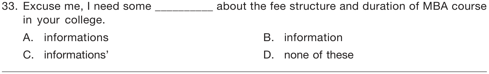
FOR QUESTIONS 31 TO 33, CHOOSE THE CORRECT OPTION TO FILL IN THE BLANK.
Excuse me, I need some __________ about the fee structure and duration of MBA course in your college.
informations
information
informations’
none of these
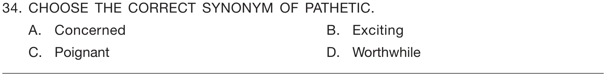
CHOOSE THE CORRECT SYNONYM OF PATHETIC.
Concerned
Exciting
Poignant
Worthwhile
‘Poignant’ is the synonym of ‘pathetic’. Both these words mean, ‘‘feeling pity or sadness’’.
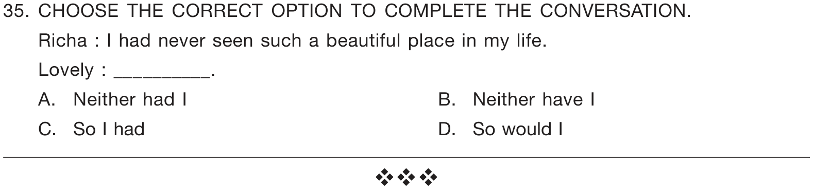
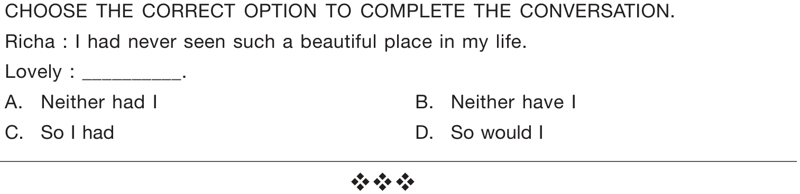
Option A
Option B
Option C
Option D